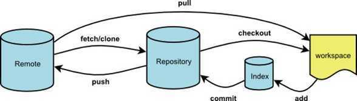

Directory
Android Studio版本2.0
1，下载安装Git
2，Android Studio配置Git
File —> Settings —> Version Control —> Git —> Path to Git executable，选择Git安装目录下的bin目录下的git.exe
3，配置Android Studio 提交忽略文件
File —> Settings —> Version Control —> Ignored Files 点击右侧加号添加忽略文件或目录，往后提交，这些文件及目录会自动被忽略掉了。一般配置如下：
.gradle
.idea
*build
*.iml
local.properties
4，注意
1，Git和SVN不一样，Git的提交代码操作是先Commit，再Push，Commit是提交到本地仓库，Push是提交至远程仓库
2，如果.gitignore文件丢失，可以通过右键项目，New —> .i*,.ignore file 进行添加
5，常用命令

#查看用户名
git config user.name
#查看用户email
git config user.email
# 配置全局用户名
git config --global user.name "xxx"
# 配置全局email
git config --global user.email "xxx@xxx.com"
1.git status 显示工作区状态，是否有修改。
#显示文件状态
git status
#以精简的方式显示文件状态
git status -s
2.git add 把修改的文件添加到index中。
# 添加xxx,yyy文件至index
git add xxx,yyy
# 添加当前目录下所有更改过的文件至index
git add .
3.git commit 把代码提交到本地仓库
#把index中的代码提交到本地代码仓库
git commit -m "xxx"
#用一个新的commit和上一个commit的合并起来，并把注释替换为abc
git commit --amend -m "xxx"
#创建空的commit
git commit --allow-empty -m "这是一个空的提交"
4.git branch 对分支的增、删、查等操作
#显示本地分支,当前分支会被星号标示
git branch
#查看远程分支
git branch -r
#查看本地所有分支的最后一次提交.
git branch -v
#查看本地所有分支的最后一次提交，同时会显示对应的远程分支.
git branch -vv
#创建名为xyz的分支(当你用这种方式创建分支的时候,分支是基于你的上一次提交建立的).
git branch xyz
#安全删除xyz分支.
git branch -d xyz
#强制删除xyz分支.
git branch -D xyz
5. git checkout
#切换到xyz分支.
git checkout xyz
#创建xyz并切换到xyz的分支.
git checkout -b xyz
#撤销对文件xyz 的修改
git checkout xyz
#新建xyz分支，并同步到develop最新代码
git checkout -b xyz origin/develop
#新建xyz分支，并同步到4a083615c这次提交后的代码（切换到4a083615c版本）
git checkout -b xyz 4a083615c
5.1 git reset
#将xyz.c从索引区移除（但会保留在工作区）
git reset HEAD xyz.c
#回退最近一次提交到工作区
git reset HEAD^
#回退最近n次提交到工作区
git reset HEAD^n
#回退到最后一次提交状态，会覆盖掉当前工作区修改的代码
git reset --hard
#版本回退到a77d8ac这次提交
a. git reset --hard a77d8ac
b. git push -f #强制推送到远程分支
c. 团队其它人需要强制用远程master覆盖掉本地master
git reset --hard origin/master
#从远程库develop分支把代码拉到本地仓库，不会进行merge
6.1 git fetch origin develop
#从远程库origin的develop分支上拉取代码到当前分支
6.2 git pull origin develop
#把远程库develop分支的改动合并到当前工作空间
7.git merge origin/develop
7.1分支合并有冲突：
a. git merge xx (合并xx分支到当前分支)
b. 使用编辑器解决冲突 (解决冲突时修改的文件会显示在提交记录里，未修改的不会出现在提交记录里)
c. git add . (使用 "git add <文件>..." 标记解决方案)
d. git commit -m "merge note" (使用 "git commit" 结束合并)
f. git push origin HEAD:refs/for/xyz (把提交push至远程xyz分支)
7.2分支合并没有冲突
a. git merge xx (合并xx分支到当前分支)
b. git commit --amend (无冲突的合并要用该命令，否则git push时会出现错误：no new changes。)
执行该命令会进入GNU nano窗口，类似于vi编辑状态，执行以下四个步骤即可
1 修改注释 (不修改注释，请跳过)
2 ctrl+O (Write Out)
3 回车 (确定Write Out)
4 ctrl+X (离开，提交完成)
c. git push origin HEAD:refs/for/xyz (把提交push至远程xyz分支)
8.git push
# push 所有branch
git push --all
# push 所有tag
git push --tags
#把本地仓库commit的代码push到远程xyz分支上（Gerrit 提交代码固定格式）
git push origin HEAD:refs/for/xyz
#本地提交转移至更新后的上游分支中,能产生一个整洁的提交历史
9.git rebase
git rebase origin/develop
10.git diff (按q退出查看diff)
# 比较 local 和 index 的区别
git diff
# 比较 index 和 workspace 的区别
git diff --cached
# 比较 前一次commit 和 workspace 的区别
git diff HEAD^
#显示 commit 的列表
11.git log
#查看所有分支的所有操作记录（包括已经删除的commit和reset的操作）
12.git reflog
13.git rm
#忽略跟踪该文件
git rm --cached --force app/app.iml
#递归删除xxx目录
git rm -r xxx
14 gerrit push到远程仓库同一个提交
1. git add .
2. git commit --amend
3 .ctrl+O
4. 回车
5. ctrl+x
6. git push origin HEAD:refs/for/develop
15.
#同步远程新增或删除的分支
git fetch origin --prune
#删除没有git add的文件和目录
git clean -fd
16.git stash
#暂存当前修改
git stash
#查看所有暂存
git stash list
#弹出stash@{0}暂存，该暂存会被丢弃
git stash pop stash@{0}
#应用stash@{0}暂存，该暂存不会被丢弃
git stash apply stash@{0}